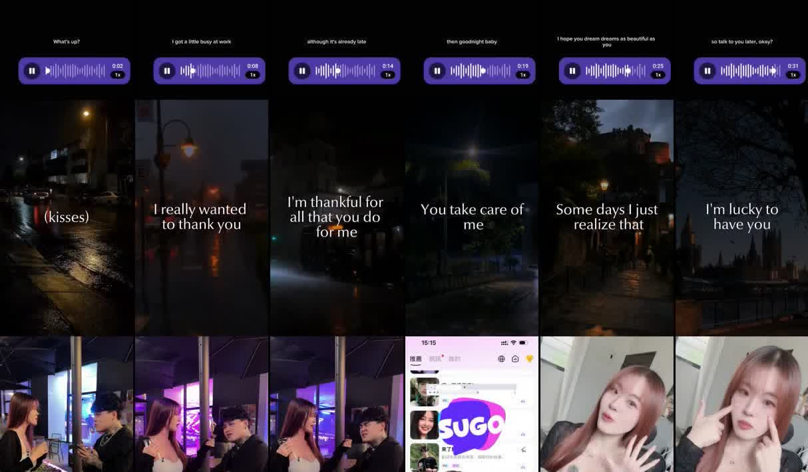

终版 · 2026-10-26
TataLand（他TA星球）
TikTok 拉新内容方案
条件：人在大陆、不方便拍摄、在 TikTok 上拉台湾（以及港马新）的女性用户。
结论：首选做「主播语音条＋夜景空镜」，备选做「App 录屏（点歌、连麦）」。两种都不用出镜，用的都是 App 里主播的真实声音，正好对上用户最认可的卖点：声音好听、真的会唱、有人陪。
01按现在的条件，选哪种
首选主播语音条＋夜景空镜
不用拍人；用台湾或粤语口音主播的声音，加繁体字幕，看不出是大陆团队做的。
备选App 录屏：点歌、连麦
手机录屏就行，证明「是真人在唱」。和语音条轮流发。
暂不做真人出镜、台湾女生实测、AI 男生脸和霸总奶狗剧情
前两种需要出镜或找台湾达人；后一种点赞率最低、差评最多。
02首选：主播语音条＋夜景空镜
长什么样：画面上方是一个语音播放条，底下是夜景空镜（街灯、雨夜、城市窗景），字幕跟着语音一句句出来，像是一个男生给你发来的语音。

上：语音播放条＋逐句字幕（2026-04，31.6 万播放）。下：夜景空镜＋男友语音字幕（2026-09，29 万播放）。
为什么选它
- 不用拍摄：素材只要一段语音和几段空镜，剪映就能做完。
- 卖的是产品最强的点：Google Play 好评里「声音好听」「听歌点唱」「陪伴」是提得最多的几类，差评几乎不提。
- 避开「大陆感」：台湾用户对大陆口音和简体字很敏感，这是社群里明确的劝退点。用台湾或粤语口音主播的声音，加繁体字幕，就能绕开。
- 今年验证过：同类内容在 2026 年单条有 29 万到 31 万播放。
怎么做
- 挑 3 到 5 位台湾、香港或马来西亚口音的主播，每人录 5 段 15 到 30 秒的语音（晚安、关心、哄人、清唱两句、下班问候）。
- 每段配 2 到 3 个夜景空镜，加播放条贴纸和逐句繁体字幕。
- 结尾 2 秒放字幕引导，账号简介放下载链接。
- 时长控制在 15 到 30 秒：官方号数据里，这个区间的播放中位数和点赞率都最好。
台词示例（繁体，给台湾女生）
晚安
今天就先到這裡吧。妳辛苦一整天了，手機放下，早點睡。明天醒來，我還在這裡。晚安。
关心
妳今天是不是又沒好好吃飯？別說有，我聽得出來。先去吃點東西，吃完再回來跟我說今天發生了什麼。
哄人
不想說話也沒關係。妳就待著，我陪妳。哭完了再跟我講，我不會走。
清唱两句
（清唱【歌名】兩句）先唱到這裡。剩下的妳來房間點，我唱給妳一個人聽。
下班
下班了嗎？今天累不累？不用想話題，想到什麼就說什麼，我都聽。
发布文案模板
【台詞摘一句】想聽完整版，來他TA星球【房號】，每晚【時間】見。#他TA星球 #聲控 #晚安 #台灣
【】里的内容换成实际的歌名、房号和时间。避免年下撒娇、吃醋、「姐姐我离不开你」这类台词，原因见第 04 节。
参考视频
03备选：App 录屏（点歌、连麦）
长什么样：手机录下一次随机匹配或者点歌，剪出最好听的 15 秒。前 3 秒直接放男生开口唱或开口说话的那一句。
左：语音条声线反差。中：语音厅录屏，给主播贴「霸总型」等类型标签。右：地域男声（东北小哥哥）。
04不做什么，为什么
AI 合成男生脸＋霸总台词、「6 元奶狗男友」、假装来电。
每千次播放的点赞数，来自官方 TikTok 号全部 1,045 条视频。
- 霸总、奶狗、年下撒娇：播放能到 200 多万，但这些播放大多是投钱买来的，看的人没反应；社群里还有人说「被奶狗音噁心到」「男夾子適應不能」。
- AI 男生脸：用户进了 App 发现对不上，会骂「全是網圖」「詐騙」。
- AI 画面套模板天天发：一个同类的「大叔」账号换成 AI 古风画面、重复标题之后，平均每条播放从约 9,000 掉到约 150。
05两周执行计划
| 时间 | 做什么 |
|---|
| 第 1–2 天 | 挑 3–5 位台湾、港、马口音主播，每人录 5 段语音；准备 20 段夜景空镜和一套剪映模板。 |
| 第 3–14 天 | 每天发 1–2 条：语音条 4 条、录屏 1 条为一轮。每条结尾都挂房号。 |
| 第 14 天 | 复盘：哪个主播、哪类台词、哪种开头的数据最好，下一轮加倍做。 |
看哪些数据
- 3 秒留存和完播率：判断开头那句声音抓不抓人。
- 点赞率、收藏率：判断内容本身有没有打动人（别只看播放量，播放量可以用钱买）。
- 主页访问、链接点击：判断有没有人想去 App。
- 按房号来的新用户数：每个主播用自己的房号，就能知道哪条视频带来了下载。
06判断依据（精简版）
≈ $60 万
2026-08 月流水（AppMagic，经白鲸出海）
台湾第一
收入第一大市场；台湾 iPhone 娱乐畅销 #10
2.74
台湾区 Google Play 评分（2,722 则）
1,045
官方 TikTok 视频全量分析（6,839 万播放）
- 官方号的播放主要是投流：平均每千播放只有 1.3 个赞；单条 250 万播放只有一千出头的赞；同一条文案反复发几十次。所以官方号的播放量不能直接拿来判断内容好不好。
- 用户为什么留下：Google Play 450 则评论里，好评提到「交朋友」68 次、「听歌点唱」42 次、「陪伴」38 次、「声音好听」34 次。
- 用户为什么骂：差评第一是「一进来就被要礼物」（69 次），其次是诈骗、牛郎店（27）、封号（22）、广告扰民（22）。
- 台湾社群：Dcard、Threads 上，下载理由几乎都是「广告打很大，好奇」；最正面的体验是「歌声好听」；劝退点除了要礼物，还有大陆口音和简体字。
- 素材风向：Meta 上在投的广告里，「倾诉、被倾听」主题从 19% 升到 55%，「专属男友」从 62% 降到 31%，团队自己也在往「有人听你说」的方向调。
- 竞品：在台湾抢同一批女生的主要是 AI 男友类应用和短剧。脸和甜言蜜语 AI 都能做，「真人现场唱给你听」做不了，这是 TataLand 的独特优势。
07参考链接
TikTok 和 Facebook 链接在中国大陆需要代理才能打开。